# load packages
library(tidyverse)
library(openintro)
library(countdown)
library(palmerpenguins)
library(ggrepel)
library(waffle)
library(scales)
# set theme for ggplot2
ggplot2::theme_set(ggplot2::theme_minimal(base_size = 14))
# set width of code output
options(width = 65)
# set figure parameters for knitr
knitr::opts_chunk$set(
fig.width = 7, # 7" width
fig.asp = 0.618, # the golden ratio
fig.retina = 3, # dpi multiplier for displaying HTML output on retina
fig.align = "center", # center align figures
dpi = 300 # higher dpi, sharper image
)Deep dive into ggplot2 layers - II
Lecture 2
Warm up
Announcements
Thank you for filling out the survey!
At this point everyone should be:
- On Slack, in public channels for #general, #homework, #project-1, #project-2, #quizzes, and #random as well as in a private channel for their lab section.
- Make sure your profile photo/avatar and name matches between GitHub and Slack.
HW 1 will be posted after class, due next Thursday.
- You’ll get to work on it in lab next Wednesday, but you should start it before then and go to lab with questions.
Setup
From last time
duke_forest <- duke_forest |>
mutate(
decade_built = (year_built %/% 10) * 10,
decade_built_cat = case_when(
decade_built <= 1940 ~ "1940 or before",
decade_built >= 1990 ~ "1990 or after",
TRUE ~ as.character(decade_built)
)
)
mean_area_decade <- duke_forest |>
group_by(decade_built_cat) |>
summarise(mean_area = mean(area))Geoms
Geoms
Geometric objects, or geoms for short, perform the actual rendering of the layer, controlling the type of plot that you create
You can think of them as “the geometric shape used to represent the data”
One variable
Discrete:
geom_bar(): display distribution of discrete variable.
Continuous
geom_histogram(): bin and count continuous variable, display with barsgeom_density(): smoothed density estimategeom_dotplot(): stack individual points into a dot plotgeom_freqpoly(): bin and count continuous variable, display with lines
Aside
Always use “typewriter text” (monospace font) when writing function names, and follow with (), e.g.,
geom_freqpoly()mean()lm()
geom_dotplot()
What does each point represent? How are their locations determined? What do the x and y axes represent?
ggplot(duke_forest, aes(x = price)) +
geom_dotplot(binwidth = 50000)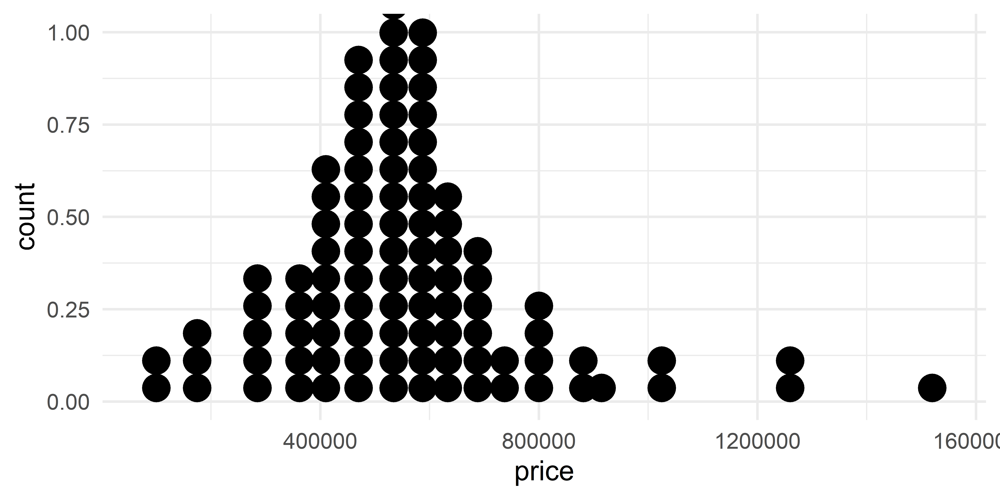
Comparing across groups
Which of the following allows for easier comparison across groups?
ggplot(duke_forest, aes(x = price, fill = decade_built_cat)) +
geom_histogram(binwidth = 100000)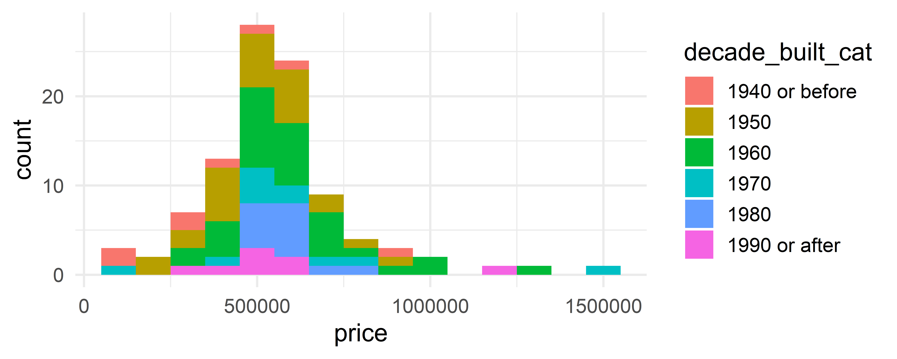
ggplot(duke_forest, aes(x = price, color = decade_built_cat)) +
geom_freqpoly(binwidth = 100000, size = 1)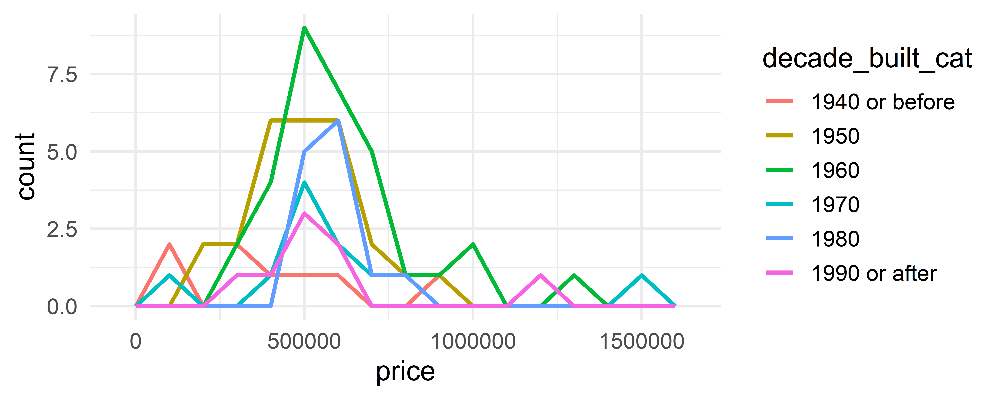
Two variables - both continuous
geom_point(): scatterplotgeom_quantile(): smoothed quantile regressiongeom_rug(): marginal rug plotsgeom_smooth(): smoothed line of best fitgeom_text(): text labels
Application exercise - Part 1
Go to the course GitHub organization: https://github.com/vizdata-s23
Clone the repo called
ae-02-[YOUR-GITHUB-USERNAME]and work on the exercises for Part 1.Once you’re done, share your plots on Slack in #general.
Label your chunk(s) and pay attention to code style and formatting!
10:00
Two variables - show density
geom_bin2d(): bin into rectangles and countgeom_density2d(): smoothed 2d density estimategeom_hex(): bin into hexagons and count
geom_hex()
Not very helpful for 98 observations:
ggplot(duke_forest, aes(x = area, y = price)) +
geom_hex()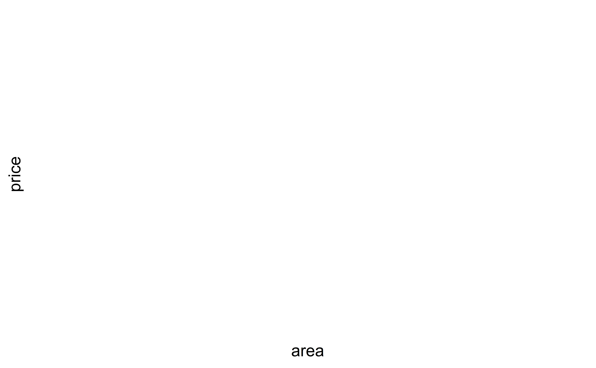
geom_hex()
More helpful for 53940 observations:
ggplot(diamonds, aes(x = carat, y = price)) +
geom_hex()geom_hex() and warnings
- Requires installing the hexbin package separately!
install.packages("hexbin")- Otherwise you might see
Warning: Computation failed in `stat_binhex()`Two variables
At least one discrete
geom_count(): count number of point at distinct locationsgeom_jitter(): randomly jitter overlapping points
One continuous, one discrete
geom_col(): a bar chart of pre-computed summariesgeom_boxplot(): boxplotsgeom_violin(): show density of values in each group
geom_jitter()
How are the following three plots different?
ggplot(duke_forest, aes(x = bed, y = price)) +
geom_point()
ggplot(duke_forest, aes(x = bed, y = price)) +
geom_jitter()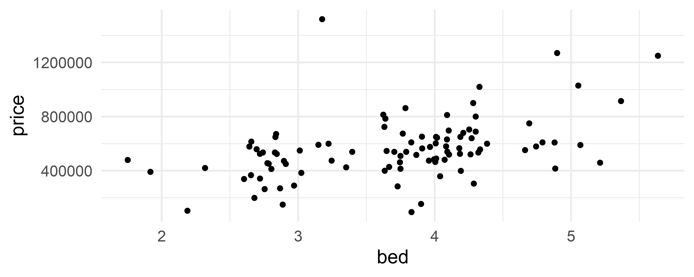
ggplot(duke_forest, aes(x = bed, y = price)) +
geom_jitter()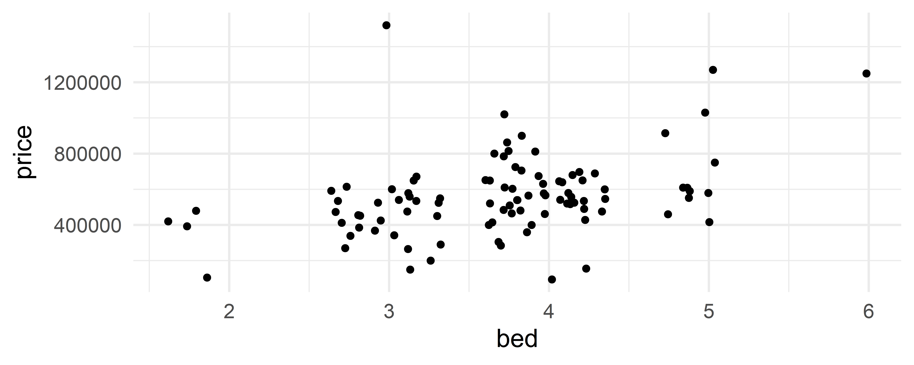
geom_jitter() and set.seed()
set.seed(1234)
ggplot(duke_forest, aes(x = bed, y = price)) +
geom_jitter()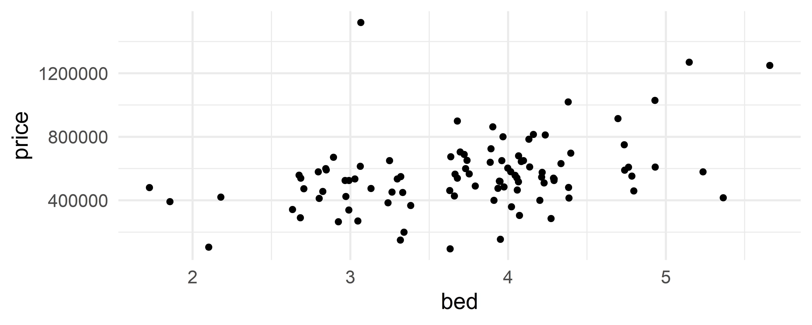
set.seed(1234)
ggplot(duke_forest, aes(x = bed, y = price)) +
geom_jitter()Two variables
- One time, one continuous
geom_area(): area plotgeom_line(): line plotgeom_step(): step plot
- Display uncertainty:
geom_crossbar(): vertical bar with centergeom_errorbar(): error barsgeom_linerange(): vertical linegeom_pointrange(): vertical line with center
- Spatial
geom_sf(): for map data (more on this later…)
Average price per year built
mean_price_year <- duke_forest |>
group_by(year_built) |>
summarise(
n = n(),
mean_price = mean(price),
sd_price = sd(price)
)
mean_price_year# A tibble: 44 × 4
year_built n mean_price sd_price
<dbl> <int> <dbl> <dbl>
1 1923 1 285000 NA
2 1934 1 600000 NA
3 1938 1 265000 NA
4 1940 1 105000 NA
5 1941 2 432500 28284.
6 1945 2 525000 530330.
7 1951 2 567500 258094.
8 1952 2 531250 469165.
9 1953 2 575000 35355.
10 1954 4 600000 33912.
# … with 34 more rowsgeom_line()
ggplot(mean_price_year, aes(x = year_built, y = mean_price)) +
geom_line()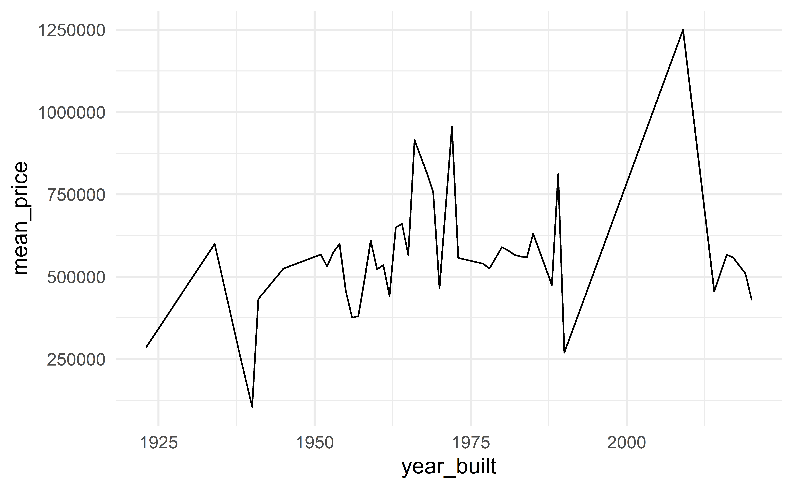
geom_area()
ggplot(mean_price_year, aes(x = year_built, y = mean_price)) +
geom_area()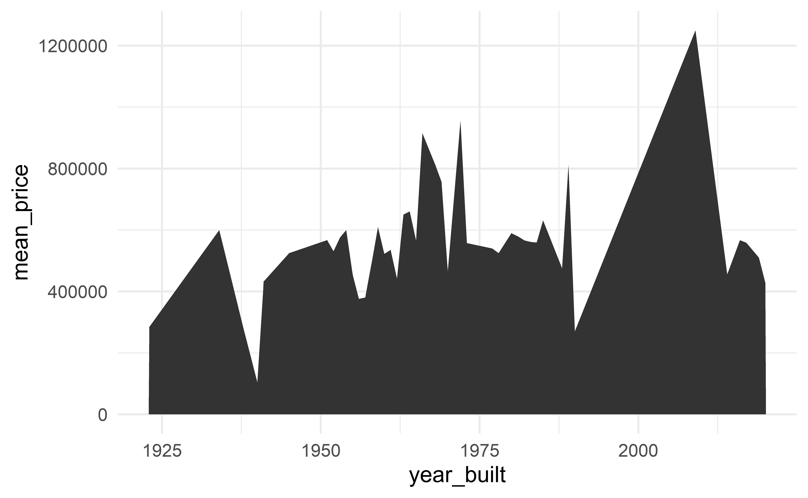
geom_step()
ggplot(mean_price_year, aes(x = year_built, y = mean_price)) +
geom_step()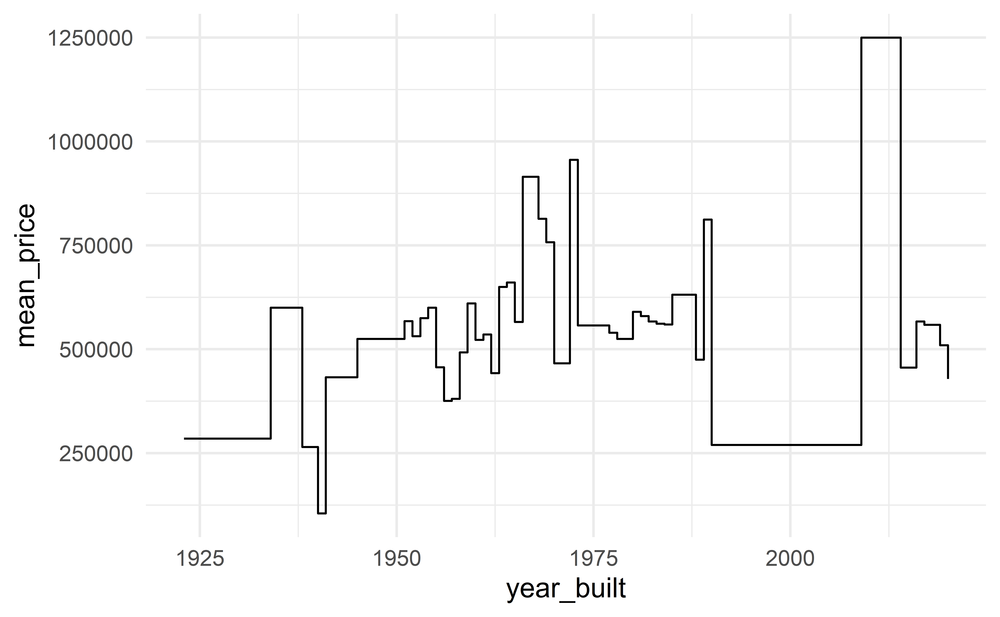
Application exercise - Part 2
Go to the course GitHub organization: https://github.com/vizdata-s23
Clone the repo called
ae-02-[YOUR-GITHUB-USERNAME]and work on the exercises for Part 2.Once you’re done, share your plot on Slack in #general.
Label your chunk(s) and pay attention to code style and formatting!
05:00
let’s clean things up a bit!
Let’s clean things up a bit!
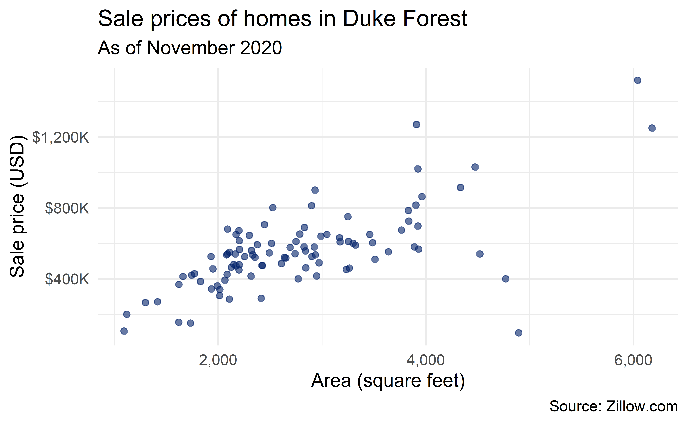
ggplot(duke_forest, aes(x = area, y = price)) +
geom_point(alpha = 0.6, size = 2, color = "#012169") +
scale_x_continuous(labels = label_number(big.mark = ",")) +
scale_y_continuous(labels = label_dollar(scale = 1/1000, suffix = "K")) +
labs(
x = "Area (square feet)",
y = "Sale price (USD)",
title = "Sale prices of homes in Duke Forest",
subtitle = "As of November 2020",
caption = "Source: Zillow.com"
)Three variables
geom_contour(): contoursgeom_tile(): tile the plane with rectanglesgeom_raster(): fast version ofgeom_tile()for equal sized tiles
geom_tile()
ggplot(duke_forest, aes(x = bed, y = bath)) +
geom_tile(aes(fill = price))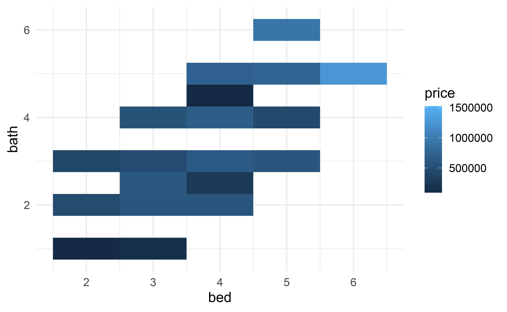